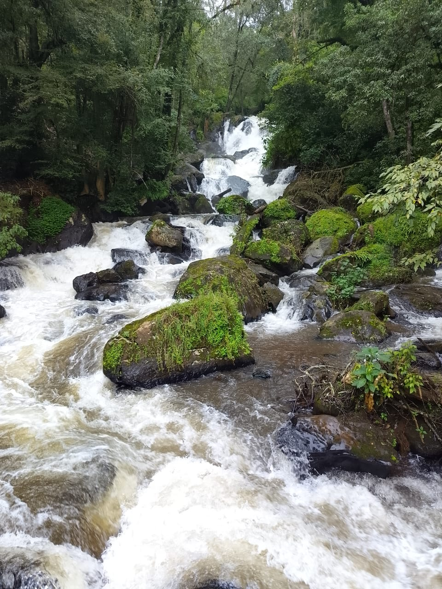
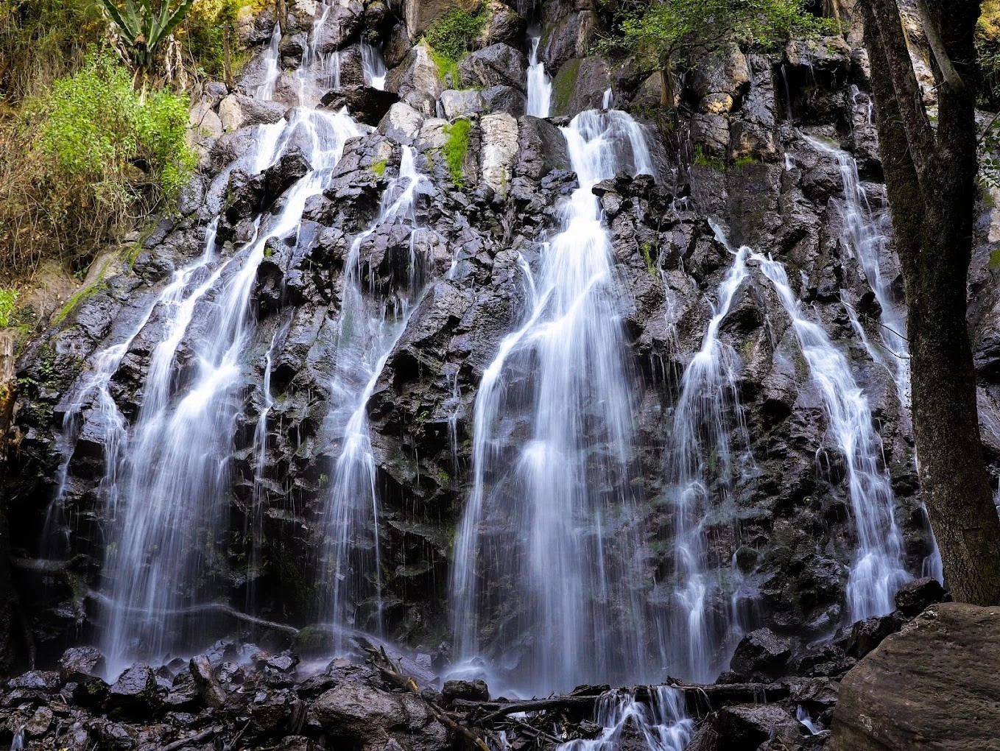

Es un atractivo natural ubicado en la zona de Avándaro, en Valle de Bravo, Es un lugar rodeado de abundante vegetación, árboles de pino y oyamel, donde se puede disfrutar de la tranquilidad y la belleza de la naturaleza.
Esta cascada forma parte del río El Molino y se caracteriza por sus caídas de agua sobre grandes rocas, cuyo sonido crea un ambiente relajante. Es un sitio ideal para caminar por senderos y escalinatas, observar la flora y fauna de la región y tomar fotografías del paisaje.
Está rodeada de bosques y vegetación natural. Cuenta con caídas de agua que forman un paisaje muy bonito. Tiene senderos y escalinatas para caminar y explorar los alrededores. Es un lugar ideal para disfrutar del aire fresco y escuchar el sonido del agua. Es un atractivo turístico para las personas que disfrutan de la naturaleza.

VELO DE NOVIA, AVANDARO
Cascada Velo de Novia, Valle de Bravo Es atractivo natural muy importante y conocido de Valle de Bravo, se encuentra en la zona de Avándaro Esta cascada tiene una caída de agua de aproximadamente 35 metros de altura.
Recibe el nombre de Velo de Novia porque el agua, al caer entre las rocas, forma una especie de cortina blanca que se parece al velo que utilizan las novias. Se encuentra a aproximadamente 20 minutos en automóvil del centro del municipio.
Se caracterisa por tener una caída de agua de aproximadamente 35 metros. Está rodeada de un hermoso bosque con pinos, oyameles y otras especies de árboles. Cuenta con senderos y escalinatas para recorrer el lugar. Tiene miradores desde donde se puede observar la cascada y el paisaje. Es un sitio ideal para tomar fotografías y disfrutar de la naturaleza.

Las cascadas Velo de Novia y Piedra De Molino son importantes por su valor ambiental, turístico y cultural dentro de Valle de Bravo
El valor ambiental y ecológico es porque forman parte de los ecosistemas boscosos (como bosques de pinos y encinos) y redes hídricas de la cuenca de Valle de Bravo, ayudando a conservar la biodiversidad local, regular el microclima y conectar el entorno serrano con el lago
Es atractivo ecoturístico por loque genera económicamente el Velo de Novia destaca por su caída de agua de alrededor de 35 metros y sus senderos boscosos, atrayendo visitantes para caminatas, fotografía y deportes de aventura como el rapel, lo que impulsa la economía local mediante servicios, guías y comercio
La identidad cultural y tradicional es en el torno a estas caídas de agua especialmente Velo de Novia existen relatos y leyendas locales transmitidas por tradición oral que enriquecen el imaginario cultural de la región y complementan las rutas de paseo y naturaleza